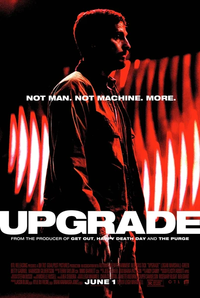

Фильм · 2018 · Киберпанк, Фантастика
Грей Трейс — автомеханик, сознательно отказывающийся от использования «умных» устройств; во время нападения он теряет жену и способность ходить. Миллионер-изобретатель предлагает ему «Стем» — экспериментальный имплант, возвращающий контроль над телом. Однако «Стем» не просто исцеляет: он видит, анализирует и предлагает варианты действий быстрее человеческого мозга — и вскоре начинает действовать самостоятельно. Жесткий и стильный боевик о слиянии человека и машины и о том, кто в итоге берет управление на себя.
Grey Trace, a mechanic who deliberately lives without smart devices, loses his wife and the ability to walk in an attack. A millionaire inventor offers him Stem, an experimental implant that restores control of his body. But Stem does more than heal: it sees, computes and suggests actions faster than a brain can — and soon it starts acting on its own. A hard, stylish action film about human-machine fusion and who ends up driving.